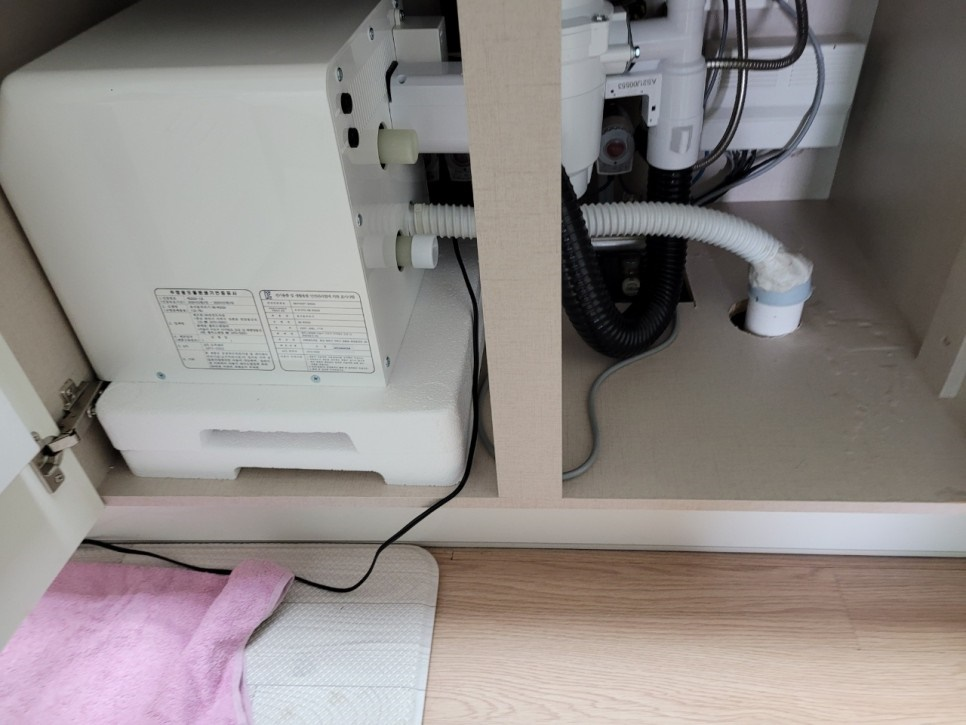
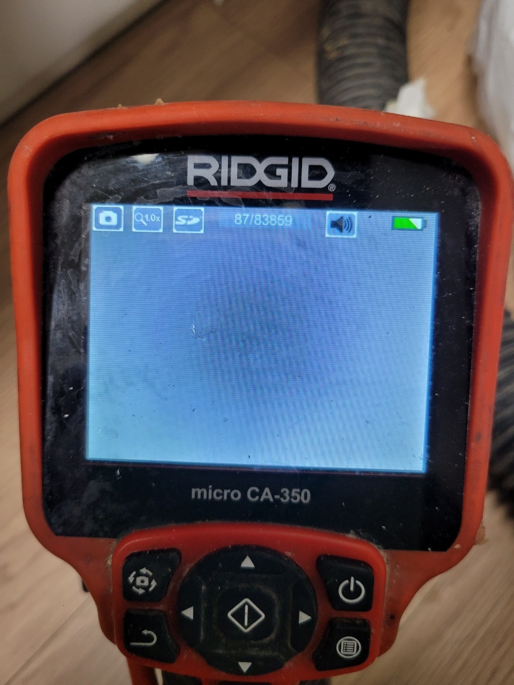
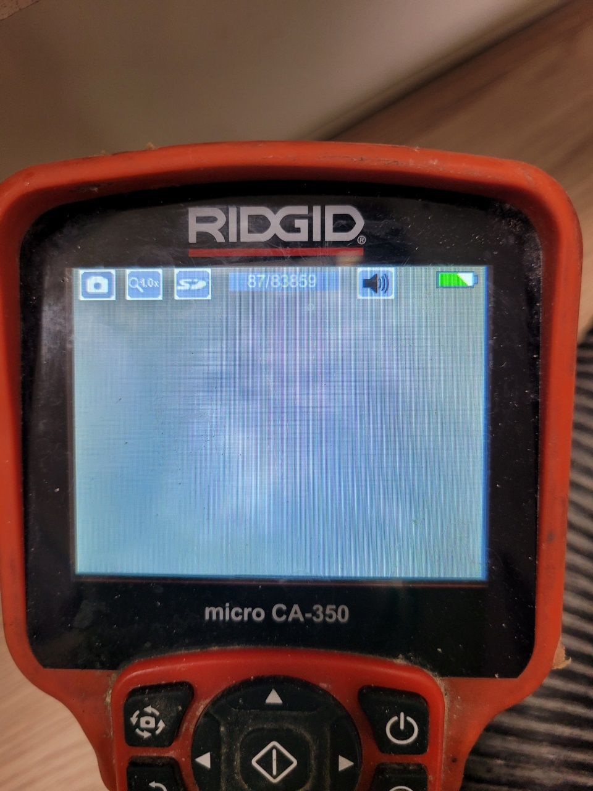

🏠 수원시 팔달구 하수구막힘 우만동 하수구역류 신속한 대처가 생명!
수원 우만동 하수구막힘 전문 시공 후기

📋 작업 개요
- 위치: 수원 우만동, 우만동, 수원
- 서비스 유형: 하수구막힘, 배관막힘, 역류해결, 뚫는업체
- 작업 일시: 2022. 12. 17. 23:41
- 업체명: 하수구수사대 (010-5615-2118)
🔍 문제 상황
안녕하세요 하수구수사대입니다. 반갑습니다!!
오늘 소개해 드릴 현장은 수원시 팔달구 하수구막힘 우만동 하수구역류 발생으로 연락을 주신 고이었는데요 여러 세대가 동시에 하수구막힘이 발생한 곳으로 많은 세대들이 어려움을 겪고 있는 상황이었습니다. 요즘은 다세대주택으로 되어 있는 경우가 많다 보니 하수구막힘이 발생하면 이렇게 여러 세대에서 막히게 되는 경우가 많이 있습니다.
이것은 바로 공동배관을 사용하기 때문인데요
수원시 팔달구 하수구막힘 우만동 하수구역류 또한 공동배관의 문제로 인해서 막힘이 발생한 곳이었습니다. 어디든지 하수구막힘 문제가 발생하게 되면 상당한 불편함을 겪을 수밖에 없는데요 그래서 저희 하수구수사대에서는 빠르게 현장해결을 하기 위해서 발 빠르게 달려갔습니다.

🔎 원인 분석
💡 전문가 진단: 이것은 바로 공동배관을 사용하기 때문인데요
수원시 팔달구 하수구막힘 우만동 하수구역류로 인해서 방문한 현장은
앞에서 말씀드린 것처럼 다세대 주택으로 되어 있는 상황이었는데요 며칠 전부터 여러 세대에서 하수구로 물을 흘려보내는데도 잘 내려가지 않고 오히려 역류가 발생하고 있는 상황이었습니다. 그래서 고객님께서는 상당히 불편하고 힘든 나날을 보내고 있었는데요 고객님들의 불편함을 해소하기 위해서 서둘러서 작업을 하였습니다.
다세대 주택의 주변으로는 가정집뿐만 아니라 공장과 사무실 등등으로 다양하게 사용 시 되는 건물들이 자리를 잡고 있었는데요 하수구막힘을 그대로 방치하게 되면 주변의 건물들까지 피해가 갈 수 있기 때문에 빠르게 해결을 해드리려고 노력을 하였습니다. 이렇게 하수구막힘이 발생을 하게 되면 고객님들께서는 급하게 해결을 하려고 직접 시도를 하시는 경우가 많이 있습니다.
하지만 막상 시도를 하다 보면 제대로 해결이 되지 못하는 것을 많이 볼 수 있는데요 이것을 근본적인 해결을 하지 못하는 상황이기 때문입니다. 그러므로 확실한 뚫음을 하기 위해서는 전문가의 도움이 필요하다고 할 수 있습니다. 보통 이렇게 배수구가 막히게 되는 현상은 배관의 상태가 좋지 못할 경우에도 많이 발생을 하게 되는데요 그러므로 평소에 얼마나 쾌적하게 배관 관리를 하느냐가 중요하다고 할 수 있습니다.

🔧 작업 과정
하수구를 통해서 물이 내려가지 않게 되면
배수관의 상태를 점검하는 것이 먼저라고 할 수 있습니다. 또한 배관을 뚫을 때는 이물질의 양에 따라서 뚫는 방법도 달라지기 때문에 전문가를 통해서 해결을 하는 것이 좋습니다. 수원시 팔달구 하수구막힘 우만동 하수구역류 현장의 경우에는 단순히 집안에 노출된 배관의 문제는 아니었는데요 우선적으로 주변에서 여러 세대가 동시에 막힘 현상을 겪고 있다는 것이었습니다.
만약 한 세대에서 문제가 발생하게 되면 그 세대의 배수관만 점검을 해보면 되지만 이렇게 주변의 많은 세대에서도 동일한 현상이 일어날 경우에는 공동 배관에서 이상이 발생한 것을 짐작해 볼 수 있습니다. 그래서 이번 현장 같은 경우는 여러 곳 중에서도 꽤나고난이도의 작업이 필요한 곳이었습니다.
그래서 먼저 공동배관을 확인하는 작업을 해보았는데요 공동배관을 찾아서 배관 내시경을 통해서 내부를 확인해 보았습니다.
이러한 작업의 경우에는 다양한 경험이 있는 전문가를 통해서 진행을 해야 확실한 해결이 가능할 수 있는데요 하수구수사대에서는 전문 장비를 이용해서 해결을 하기 때문에 신속하고 정확하게 해결을 할 수 있습니다. 배관 내시경을 이용해서 내부를 확인하고 이물질 제거 작업을 하였는데요 내부에 이물질을 통수 작업을 통해서 이물질들을 모두 제거하는 작업을 하였습니다.
이물질 제거 후 배관이 다시 원활해진 것을 보고


✅ 작업 완료
작업을 마무리하였습니다.
경기도 수원시 팔달구 효원로249번길 46-15 5층 71호



⚠️ 하수구 배관 막힘 예방 및 관리 가이드
- ✅ 머리카락, 비닐, 물티슈 등 물에 분해되지 않는 이물질은 하수구 유입을 절대 금지해 주세요.
- ✅ 하수구 거름망을 씌우고 모여진 이물질은 주기적으로 쓰레기통에 바로 비워주셔야 합니다.
- ✅ 배관 노후가 심할 경우 이물질이 더 쉽게 걸리므로 주기적인 배관 세척(고압세척 등)을 권장합니다.
- ✅ 작업 후 1년 이내 재발 시 하수구수사대에서 무상 A/S 보증 서비스를 제공합니다.
💡 핵심 정리
- 확실한 장비 작업(내시경 점검 및 샤프트 스케일링)으로 원인을 뿌리 뽑습니다.
- 작업 후 1년 이내에 동일한 부위 재발 시 100% 무상 A/S 서비스를 보장합니다.
- 서울 · 경기 · 인천 전 지역에 24시간 언제든 긴급 출동할 수 있도록 항시 대기 중입니다.
❓ 자주 묻는 질문 (FAQ)
🚨 수원 우만동 하수구막힘 문제로 고민이신가요?
정확한 원인 진단과 확실한 시공으로 재발 없는 해결을 약속드립니다.
24시간 긴급 출동 | 서울 · 경기 · 인천 전지역 | 1년 내 재발 시 무상 A/S